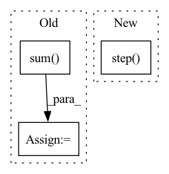

Pattern ID :12049
Before Change
batch_size, seq_length = input_["input_ids"].shape
seq_lengths = None
if "attention_mask" in input_:
seq_lengths = torch.sum( input_["attention_mask"], dim=-1)
// TODO: Why is this not happening in TransformerSpanClassificationTaskModule.collate?
target = self._expand_target_tuples(
target_tuples=target_tuples,
batch_size=batch_size,After Change
return loss
def training_step(self, batch: TransformerSpanClassificationModelStepBatchEncoding, batch_idx: int): // type: ignore
return self.step(stage=TRAINING, batch=batch, batch_idx=batch_idx)
def validation_step(self, batch: TransformerSpanClassificationModelStepBatchEncoding, batch_idx: int): // type: ignore
return self.step(stage=VALIDATION, batch=batch, batch_idx=batch_idx)
In pattern: SUPERPATTERN
Frequency: 4
Non-data size: 3
Instances Fragment ID: 40708538
Project Name: christophalt/pytorch-ie
Commit Name: 11157646f07bcfe6e6e46f1a6ea56c1d4d1ca860
Time: 2022-05-05
Author: ArneBinder@users.noreply.github.com
File Name: src/pytorch_ie/models/transformer_span_classification.py
M Class Name: TransformerSpanClassificationModel
N Class Name: TransformerSpanClassificationModel
M Method Name: training_step(3)
N Method Name: training_step(3)
M Parent Class: PyTorchIEModel
N Parent Class: PyTorchIEModel
M File Name: src/pytorch_ie/models/transformer_span_classification.py
N File Name: src/pytorch_ie/models/transformer_span_classification.py
M Start Line: 170
M End Line: 198
N Start Line: 213
N End Line: 214
Before Change
logits = torch.einsum("nlh,vh->nvl", tgt_hidden, cls) // (N, |V|, L)
// (N, |V|, L), (N, L) -> (N, 1) -> (1)
// the lengths are different -> pad should not be ignored
loss = F.cross_entropy(logits, y, ignore_index=self.hparams["pad_token_id"]).sum()
return {
"loss": loss,
"logits": logits.detach()
}After Change
:return: a scalar tensor
X, y = batch
loss, logits = self.step( X, y)
self.log("Train/Loss", loss)
self.acc_train.update(logits.detach(), target=y.detach())
return {
"loss": loss Fragment ID: 40708535
Project Name: eubinecto/the-clean-transformer
Commit Name: 339e441dd77323d567cf3dd1bacac2b2ef87bcba
Time: 2021-12-10
Author: eubinecto
File Name: dekorde/models.py
M Class Name: Transformer
N Class Name: Transformer
M Method Name: training_step(2)
N Method Name: training_step(2)
M Parent Class: LightningModule,ABC
N Parent Class: LightningModule,ABC
M File Name: dekorde/models.py
N File Name: dekorde/models.py
M Start Line: 69
M End Line: 83
N Start Line: 83
N End Line: 88
Before Change
batch_size, seq_length = input_["input_ids"].shape
seq_lengths = None
if "attention_mask" in input_:
seq_lengths = torch.sum( input_["attention_mask"], dim=-1)
// TODO: Why is this not happening in TransformerSpanClassificationTaskModule.collate?
target = self._expand_target_tuples(
target_tuples=target_tuples,After Change
return self.step(stage=TRAINING, batch=batch, batch_idx=batch_idx)
def validation_step(self, batch: TransformerSpanClassificationModelStepBatchEncoding, batch_idx: int): // type: ignore
return self.step(stage=VALIDATION, batch=batch, batch_idx=batch_idx)
def test_step(self, batch: TransformerSpanClassificationModelStepBatchEncoding, batch_idx: int): // type: ignore
return self.step(stage=TEST, batch=batch, batch_idx=batch_idx)
Fragment ID: 40708529
Project Name: christophalt/pytorch-ie
Commit Name: 11157646f07bcfe6e6e46f1a6ea56c1d4d1ca860
Time: 2022-05-05
Author: ArneBinder@users.noreply.github.com
File Name: src/pytorch_ie/models/transformer_span_classification.py
M Class Name: TransformerSpanClassificationModel
N Class Name: TransformerSpanClassificationModel
M Method Name: validation_step(3)
N Method Name: validation_step(3)
M Parent Class: PyTorchIEModel
N Parent Class: PyTorchIEModel
M File Name: src/pytorch_ie/models/transformer_span_classification.py
N File Name: src/pytorch_ie/models/transformer_span_classification.py
M Start Line: 200
M End Line: 229
N Start Line: 216
N End Line: 217